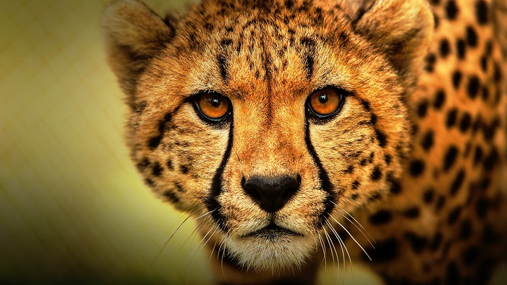

The animal world
The animal world is full of incredible life forms, each with special qualities that help them survive. Every species has developed its own way of living,
hunting, and protecting itself. Some animals are harmless, but others are among the most dangerous predators on Earth.
One of the smallest but most dangerous creatures is the mosquito. Although it is just a tiny insect, its ability to spread diseases makes it one of
the most harmful animals to humans. Its “defence” is not strength or speed, but survival through reproduction and adaptation.
Another well-known animal is the snake. Many snakes use poison as a powerful defence system. A single bite from some species can be extremely dangerous.
Snakes are also skilled predators, often stronger and faster than their victim in short attacks, making them one of the most effective hunters in nature.
The jellyfish is another fascinating creature. Some jellyfish have very strong poison, which they use both for hunting and defence. Even though
they look soft and fragile, they are actually among the most dangerous animals in the sea. Their invisible danger makes them more effective than
many faster predators.
Even the smallest creatures, like the ant, have impressive defence systems. Ants work together in groups, and their strength as a colony is more
powerful than their individual size. Some ants can also bite or release chemicals to protect themselves, showing that teamwork is their greatest quality.
In conclusion, the animal world is full of incredible defence strategies. From poison in snakes and jellyfish to strength in whales and teamwork
in ants, every animal has its own way of surviving. Nature shows that even the smallest insect can have a powerful defence, and even the largest
predator must trust on its unique qualities to live.